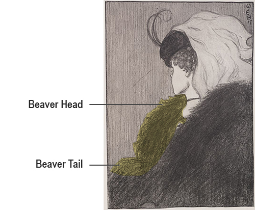
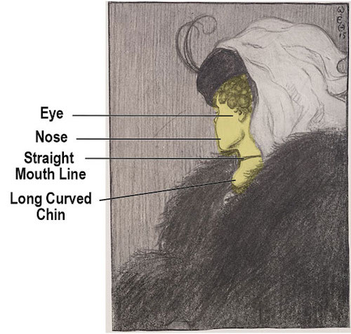
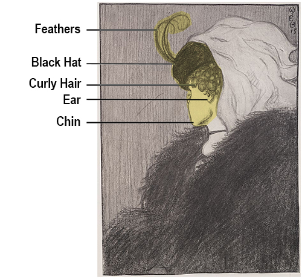
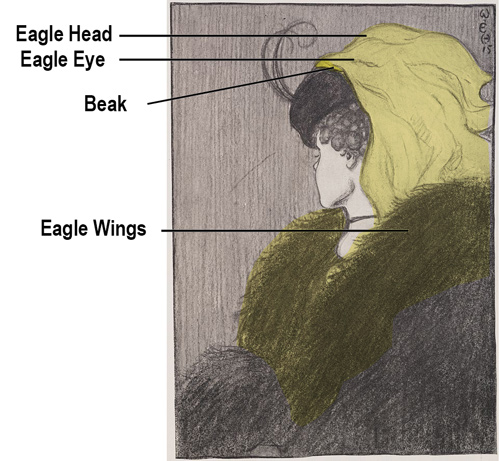

Basic a11y-compare-image demo
Default Compare Mode
The image on the top or when slider is moved all the way to the right is the Matterhorn on a cloudy day without snow. As you move the slider to the left, the image below it reveals the Matterhorn on a clear day with snow.

Default Compare Mode
The image on the top or when slider is moved all the way to the right is the Matterhorn on a cloudy day without snow. As you move the slider to the left, the image below it reveals the Matterhorn on a clear day with snow.
   Opacity Compare Mode
The image on the top or when slider is moved all the way to the right is the Matterhorn on a cloudy day without snow. As you move the slider to the left, the image below it reveals the Matterhorn on a clear day with snow.